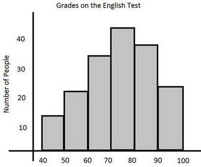
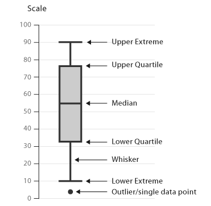
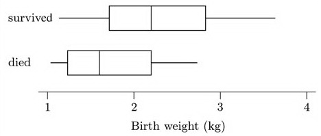
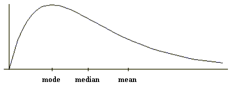
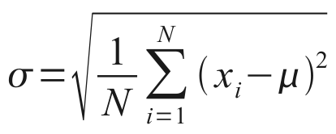

The Cartoon Introduction to Statistics
Table of Contents
1 Part 1: Gathering Statistics
1.1 Introduction: They're everywhere
Statistics is about using the fish we did catch to say things about the fish we didn't.
Statistics help us make confident dicisions when we have limited information.
We can use statistics to make confident guesses, but you can never use them to achieve certainty.
1.2 Chapter 1: Numbers
Treat all numbers with a healthy dose of skepticism.
Always ask these questions of any number you encounter:
- Where did you come from?
- Who made you?
- And why?
1.3 Chapter 2: Random raw data
Sometimes it's impossible to count all the things you want to know about. Which is why, long ago, someone dreamed up the strategy of studying a sample to learn something about an entire population.
Ideally we'd like to gather a sample that accurately mirrors the population. This can seem like an impossible task when we don't know what the population looks like. To avoid bias, we always collect samples randomly.
Random sampling is the key to all statistical inquiry.
1.4 Chapter 3: Sorting
We gather categorical data when we're studying features that we can describe only with words (eg. colors, nations)h or yes/no answers.
After we gather categorical data we can easily pile it or slice it to give us a sense of the proportions in our sample.
We gather numerical data when we're studying features that we can compare using numbers (eg. age, height).
The crucial difference between the two types of data is that we can do math on numerical data.
The most basic picture of numerical data is called a histogram.

Figure 1: Histogram
Another useful way to visualize numerical data is with a boxplot.
… cram the middle 50% of sample values into one big box.

Figure 2: Boxplot
Boxplots can be especially useful when we want an overview of our data or want to compare different samples or groups.
Boxplots can give us a quick sense of how data clumps together and whether it trails off in one direction or the other.

Figure 3: Boxplots
1.5 Chapter 4: Detective work
When we start to investigate any pile of data, we always look at four primary characteristics:
- sample size
- shape
- location
- spread
The size of a sample is directly related to the level of confidence we can have about a population.
In general, a larger sample size is better.
We call a pile of data flat when all the possible outcomes are equally likely.
We call a pile of data normal when something is causing it to clump around one particular value.
We call a pile of data skewed when something is causing it to trail off more in one direction than the other.

Figure 4: Normal and skewed distribution
Location is a measure of where the bulk of the data sits on a number line.
| mean | average value | 平均数 |
|---|---|---|
| median | middle value | 中位数 |
| mode | most repeated value | 众数 |
Averages can be deceptive if a pile of data is skewed.
With skewed data, the median is often more revealing as a measure of location.

Figure 5: Average (mean) vs median
… never think about the location of any pile of data without also thinking about its shape.
The most common measure of spread is Standard Deviation (SD).

Figure 6: Standard Deviation
1.6 Chapter 5: Monster mistakes
Much of the time we're exploring how one variable influences another. But remember, when we use statistics we can never totally prove any of our conclustions.
Whenever we think we see a relationship between two variables, there might be some other variable influencing our conclusions.
… lurking variables can bedevil all kinds of statistical analysis, and part of a statistician's job is dig around for them.
1.7 Chapter 6: From samples to populations
When we pile up sample data, we call the result a sample histogram.
If we could pile up an entire population, we'd call the result a population distribution (群体分布).
We refer to qualities in samples as statistics, and to qualities in populations as parameters.
Statistics are the things we actually calculate and therefore know with certainty.
Parameters are the things we really want to know but can only make guesses about.